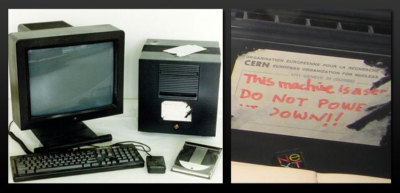

Premier site et premier serveur Web

Le premier site Web a été créé par Tim Berners-Lee en 1991, alors qu'il travaillait au CERN. Il s'agissait d'un simple document HTML contenant des informations sur le projet World Wide Web et comment y accéder. Le premier serveur Web, appelé "CERN httpd", a également été développé par Berners-Lee en 1991. Il a été utilisé pour héberger le premier site Web et permettre aux utilisateurs d'accéder à ce site en utilisant un navigateur Web. Le serveur et le site Web ont été mis en ligne le 6 août 1991, marquant le début officiel du World Wide Web.
←